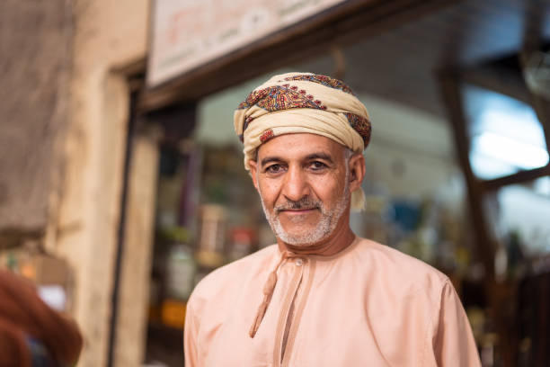
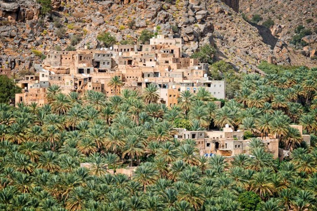
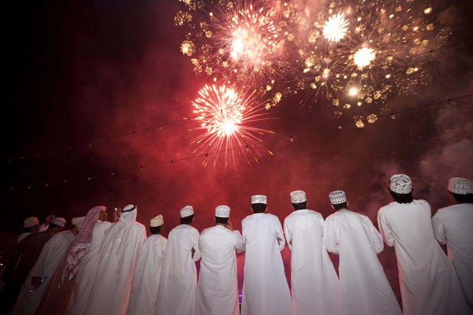
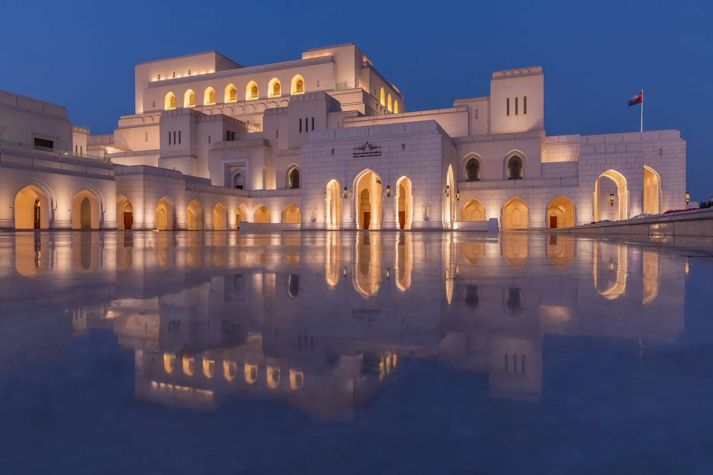
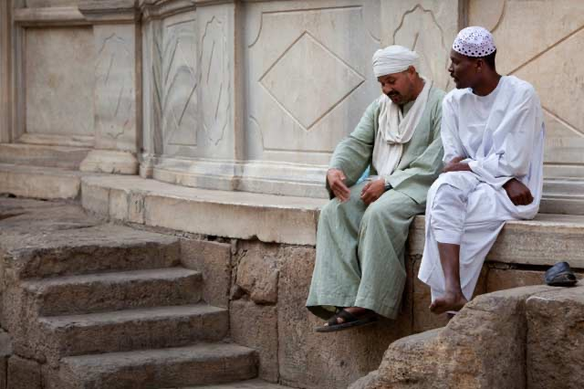

Welcome to our portfolio, where our talented photographers' work brings the art of photography to life. The best work from a variety of categories, such as commercial, events, landscape, and portrait photography, is displayed here. Every picture conveys a distinct tale, demonstrating our commitment to preserving the spontaneity, beauty, and emotion of every second. Our portfolio provides an insight into the variety of styles and abilities that set our team apart, whether you're looking for inspiration, want to hire a photographer, or are just interested in the art. Investigate, learn, and allow the pictures to do the talking.
|  |
Portrait
Sarah Al manji
Sarah is a gifted portrait photographer who is renowned for capturing her subjects' genuine personalities.
She produces personal and emotive photographs that showcase her customers' personalities and feelings since
she has an excellent eye for detail and a love of telling stories. Sarah's art radiates warmth and genuineness,
whether it's a family portrait or a business headshot.
|
|  |
Landscape
Ahmed Al harthi
Ahmed is a passionate landscape photographer who uses his camera to capture the splendor of the natural world.
His artwork frequently captures the ideal lighting and dramatic weather conditions, showcasing breathtaking
panoramas ranging from tranquil seascapes to towering mountain ranges. Every photograph he takes reflects his
profound love of the outdoors, which makes his work an uplifting ode to nature.
|
|  |
Commercial and Event
Reem Al amri
Reem is an expert in event and commercial photography, assisting companies and brands in using compelling imagery
to communicate their messages. Her work ranges widely, from lifestyle photos and advertising campaigns to business
events and product launches. Reem's strategy ensures that every image appeals to the target audience by fusing
creativity with a strong emphasis on brand identity.
|
|  |
Architecture
Zaid Al shamsi
Zaid is a talented architecture photographer who has an excellent sense of symmetry, light and shadow interaction,
and detail. Zaid has a passion for portraying the beauty of structures, and his work includes detailed interiors,
modern skyscrapers, and historic buildings. By emphasizing angles and views that highlight distinctive elements,
his photography captures the uniqueness and beauty of architectural projects. Through his photography, Zaid aims
to convey the narrative of every area, highlighting its composition and character.
|
|  |
Candid
Mia Al maskari
Mia is an enthusiastic candid photographer who focuses on catching unplanned moments in daily life.
Her art demonstrates real feelings and spontaneous exchanges, highlighting the beauty of life's ephemeral moments.
Whether it's a happy grin, a contemplative look, or a peaceful moment of introspection, Mia's photography captures
the moments that are frequently overlooked. Through her photographs, she hopes to celebrate the genuineness of human
experiences and arouse sentiments of connection and nostalgia.
|